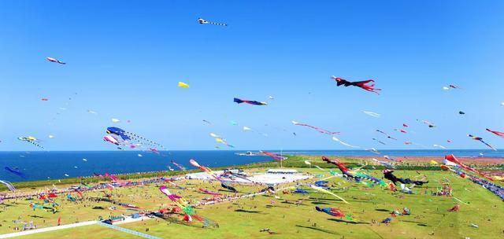

——潍坊风筝——
——潍坊风筝会——
潍坊风筝节（会）每年四月的第三个周六在潍坊举行；
有来自世界各地的30多个国家和地区参赛，是我国最早冠以”国际”并被国际社会承认的大型地方节
会；
从1984年,已成功举办过三十八届，其创立的“风筝牵线、文体搭台、经贸唱戏”的模式，被全国各地
广为借鉴。

——世界风筝都纪念广场——
以“风筝文化、民俗文化、人文文化”为主题规划设计的纪念广场；
是潍坊城市建设史上的新亮点，展现风筝都形象的标志性景观；
整个广场通过吉祥大道、鸢标广场等十大景观，追颂历史，咏颂现在，展颂未来。